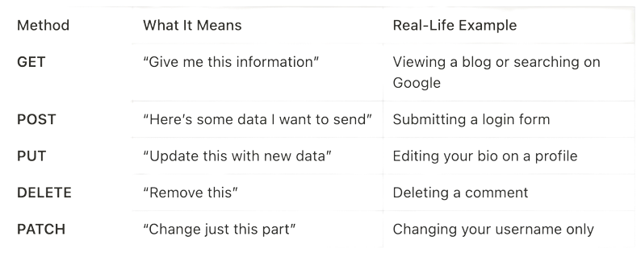

HTTP is the foundation of data communication on web.
“HTTP is a set of rules that allow computers to talk to each other over the internet.”
When you open a browser and visit a website like www.google.com - your browser knocks on Google's door and says:
=>“Hey! Can you show me the homepage, please?”
And Google, being the polite host it is, replies:
=>“Sure! Here's the content you asked for.”
This whole conversation happens using HTTP. Think of HTTP as the language your browser uses to request data, and your server uses to respond.
HTTP has two very fun personality traits:
Here's how HTTP works when you open a website like google.com:
https://www.google.com.Think of it like mailing a letter and getting a reply. There's no ongoing call or memory - every request stands alone.
If HTTP is stateless, how does Google remember you're logged in?
💡 Answer: Cookies
Cookies are small text files that your browser stores locally.
Here's how they work:
So even though HTTP itself is stateless, cookies enable websites to remember who you are.
Think of HTTP Methods like the different actions you can perform in a conversation:
The browser uses these methods to talk to the server and get things done.
When your browser makes a request, the server replies with a status code to indicate what happened:
These codes help developers understand what's going wrong when something doesn't load properly.
Imagine you're writing a postcard (📬).
Anyone who handles it can read everything you wrote. That's how HTTP works — your data travels openly, without any protection.
Now imagine locking that postcard in a box 🔒 before sending it.
Only the person with the key can open and read it. That's HTTPS — it encrypts your data, so no one else can read it, even if they intercept it.
HTTP might seem like a complex technical detail, but it's the invisible backbone of the internet. Every time you open a browser, make an API call,or visit a website,
HTTP is working silently behind the scenes.
So, the next time you hear someone say, "this API is broken," you'll know it's likely just an HTTP request that didn't go as planned. 😉